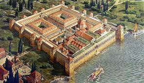

Grad je utemeljen kao grčka kolonija imena Aspálathos (Aσπάλαθος) u 3. ili 2. stoljeću pr. kr. na obalama tadašnje ilirske Dalmacije, a kasnije postaje rezidencija rimskog cara Dioklecijana nakon što je po njegovu nalogu podno poluotoka Marjana izgrađena Dioklecijanova palača 305. godine. Nakon što su obližnju Salonu, glavni grad rimske provincije Dalmacije, razorili Avari i Slaveni oko 650. godine, grad Split dobiva na važnosti, a naseljava ga većinom odbjeglo stanovništvo razorene Salone koje se od napadača sakrilo iza jakih zidina palače, nakon čega toga postaje Bizantski grad. Nešto kasnije pada pod utjecaj Venecijanske republike i Hrvatskog kraljevstva, ali ostaje pod vlašću Bizantskog Carstva. Tijekom cijelog perioda visokog i kasnog srednjeg vijeka Split uživa autonomiju kao slobodni grad, jedan od dalmatinskih gradova-država, ali isto tako ostaje obilježen dugotrajnom borbom za prevlast između Mletaka i Hrvatske (tada već u uniji s Ugarskom) oko kontrole nad Dalmatinskim gradovima. Venecija na kraju prevladava pa tijekom ranog novog vijeka Split potpuno potpada pod vlast Venecije i predstavlja snažno utvrđeni grad, sa svih strana okružen Otomanskim teritorijem. Zaleđe grada je potpalo pod Turke nakon Morejskog rata 1699. godine, a 1797. godine, nakon što Venecija pada pred Napoleonom, mirovnim sporazumom iz Campo Formija Split je pripao Habsburškoj monarhiji. 1805. godine, Požunskim mirovnim sporazumom, Split je pridodan Napoleonovoj Kraljevini Italiji, a 1806. biva uključen u Prvo Francusko Carstvo, postavši u 1809. godini dijelom Ilirskih provincija. Nakon što je 1813. okupiran od Austrijskog Carstva, bio mu je i dodijeljen temeljem odluka Bečkog kongresa 1814. godine, a Split ostaje u sastavu austrijske Kraljevine Dalmacije sve do pada Austro-Ugarske završetkom Prvog s vjetskog rata 1918. godine i formiranja Kraljevine Jugoslavije. Početkom Drugog svjetskog rata grad je aneksirala fašistička Italija, sukladno Rimskim ugovorima koje je potpisalo vodstvo NDH na čelu s Pavelićem, nakon čega grad ostaje bez svog prirodnog zaleđa, a stanovništvo se pokušava talijanizirati. Zbog toga velik dio građana odlazi u partizane koji su ga i oslobodili odmah nakon kapitulacije Italije u 1943. godini. Ubrzo ga je ponovo okupirala nacistička Njemačka koja ga je poklonila svojoj marionetskoj saveznici NDH. Grad su partizani konačno oslobodili 26. listopada 1944. i taj datum se slavi i danas kao Dan oslobođenja grada Splita. U travnju 1945.godine u Splitu je na sjednici ZAVNOH-a u Staroj gradskoj vijećnici formirana Narodna vlada Federalne Hrvatske. Sjednicom je predsjedao pjesnik Vladimir Nazor. Predsjednik Vlade bio je Vladimir Bakarić, a među 11 ministara kao ministrica financija bila je Splićanka Anka Beus. Vicko Krstulović bio je drugi član Vlade iz Splita.[9] Nakon rata Split je postao dijelom socijalističke Jugoslavije, kao drugi grad po veličini u tadašnjoj Socijalističkoj Republici Hrvatskoj. Nakon raspada Jugoslavije i Domovinskog rata Hrvatska je proglasila neovisnost, a Split postaje d ijelom suvremene demokratske Republike Hrvatske.
